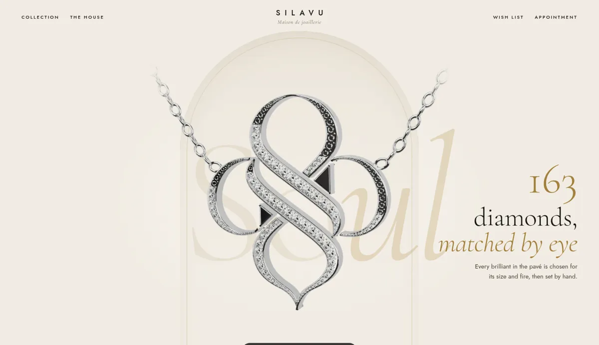
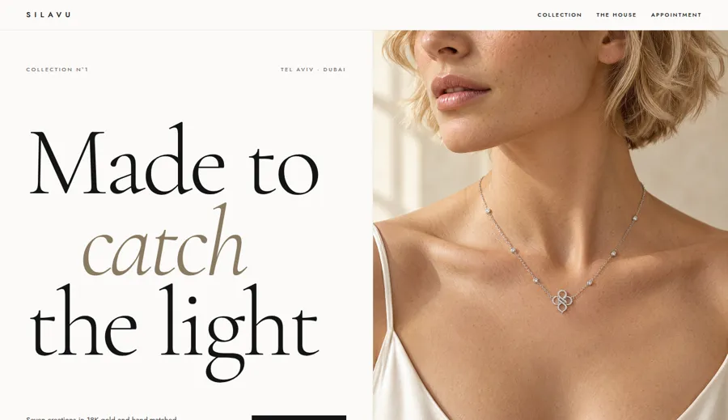
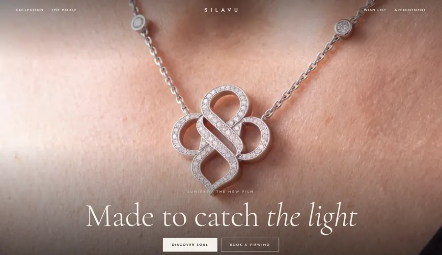
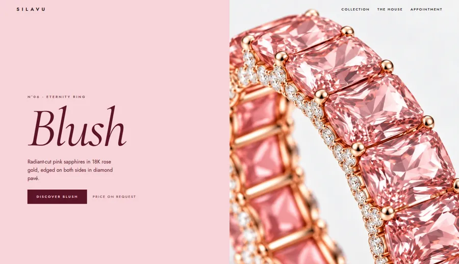
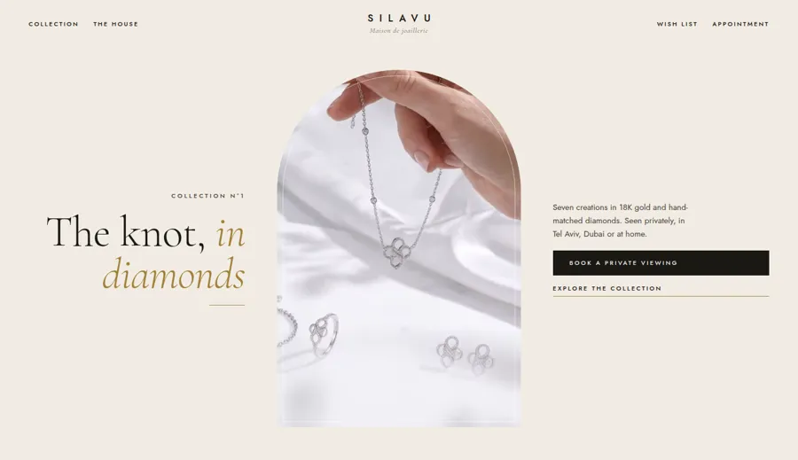

SILAVU
ארבעה כיוונים, ועכשיו גם D עם תלת מימד.
כל כיוון הוא מסך פתיחה וקטע אחד מתחתיו, עם התמונות והסרטים האמיתיים של SILAVU. תפתח כל אחד, גם בטלפון, ותגיד לי איזה. אפשר גם לשלב, למשל "הצבעים של C עם הקשתות של D".

D+3D
הקשתות, עם SOUL בתלת מימד
פתחהבחירה שלך: D, ו-SOUL שמסתובב, יוצא מהקשת אליך עם הגלילה, עובר על היהלומים מקרוב וחוזר פנימה.

A
מגזין
פתחלבן ונקי, טיפוגרפיה ענקית ותמונה גדולה, כמו שער של Vogue.

B
קולנוע
פתחהסרט על כל המסך, שחור, מעט מילים. כמו בית אופנה גדול.

C
צבע
פתחבלוקים של צבע לכל תכשיט, ורוד, תכלת וצהוב, ותמונות מקרו ענקיות. נועז ומודרני.

D
קשתות
פתחשמנת וזהב, תמונות במסגרת של קשת. קלאסי, יוקרתי, מתאים לדובאי.
בתחתית כל דף יש כפתורי A B C D, כדי לעבור ביניהם מהר.